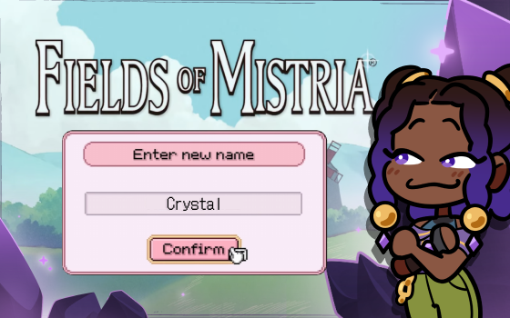
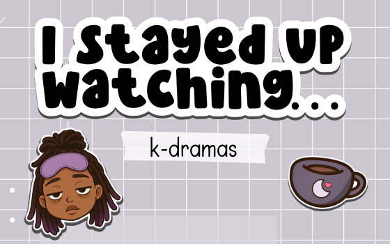
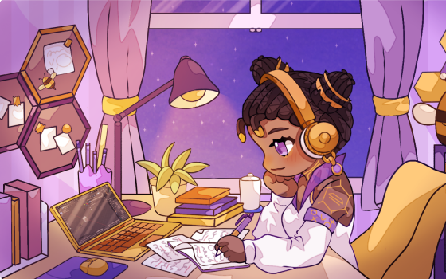

.svg)


Bryttany, or "B," joined Alight in 2021 during a period of organizational transformation. I was initially drawn to her strong UX process and academic background in Human-Computer Interaction, which gave me confidence in her ability to bring rigor, thoughtful problem solving, and a high bar for quality to the team. Those qualities were a key reason I hired her, particularly because I believed she would elevate the work and provide strong mentorship to designers supporting one of our Wealth clients.

IMG
Bryttany Winkfield
Hey, I'm Bryttany — but you can call me B, the
designer!

I’m naturally curious, collaborative by default, and always learning — whether that’s refining my design craft, mentoring teammates, or exploring new spaces like game UI and interactive design.
BACKGROUND
What shapes me as a designer
My experience at a glance
- Product Designer with 10+ years of experience in the tech design industry.
- Background in UX, Accessibility, Design Systems, IxD, and QA design.
- Experience designing enterprise SaaS, platforms and complex workflows.
- Strong collaborator across product, engineering, content designers and researchers.
- Comfortable owning problems from early discovery through delivery.
I’ve spent much of my career designing within constraints — legacy systems, regulatory environments, tight timelines — and enjoy finding clarity and simplicity within complexity.
TESTIMONIALS
Open to contract & full-time
Reviews from People I've Worked With
A few words from people I've built alongside — teammates, leads, and clients. Number and character count has been reduced for quick review. To view indepth feedback and experiences visit my LinkedIn Recommendations.
What sets her apart isn't just the craft, though her craft is excellent. It's the way she thinks. She frames problems before she touches pixels. She builds design systems that actually scale. She earns the trust of product and engineering by showing her work and knowing when to push back and when to move fast.
She also led through ambiguity without drama, which is rarer than it sounds.
I absolutely loved working with B. She is an intuitive and experienced product designer with strong, nuanced problem-solving skills. Her thoughtful, steady leadership style informs and guides those around her. She actively encourages and supports her teammates- fostering an environment rooted in collaboration, shared growth, and mutual respect.
I had the privilege of working on B’s team during my time at Alight Solutions. She’s an exceptionally talented, hands‑on designer who brings a rare blend of strong visual instincts, systems thinking, and a deep understanding of what makes a user experience truly effective. B can do it all and she does it quickly and with remarkable skill.
I had the pleasure of working with B for four years, during which she was both my manager and a key mentor in my career growth. Early in my career, B was incredibly supportive and always available when I needed guidance. As I grew, she showed a deep trust in my abilities, knowing exactly when to step in with feedback and when to give me the independence to fully own my projects.
B's leadership has been a driving force behind the remarkable achievements of the Wealth, Thrift, and HealthNav team. She is a professional and dynamic individual who brings confidence, collaboration, and constructive feedback to the table. In addition to being a confident leader, B is a stellar partner in our Alight Design System collaborative endeavors.
B is a hands-on design leader that every design and product team would benefit from. Through her collaboration with PMs and stakeholders, she consistently advocates for the users and UX best practices, while keeping the business needs in mind. With her thorough approach, she asks insightful questions and offers a strong point of view to ensure that the team does not compromise the user experience, and grounds her designs in clear rationale and impact.
Education & Certifications
I actively invest in continuous learning through platforms such as LinkedIn Learning, regularly expanding my skill set with new certifications. Each completed certification is documented on LinkedIn, where you can view my most recent credentials and ongoing professional development.
Outside of Work
When I’m not designing, I enjoy creative projects that let me explore storytelling, interaction, and community in different ways.



Subject
Description
It's not everyday I get to talk about myself this much.
If you'd like to see how these values and approaches show up in real work you can explore my selected work.
don't be a stranger!
Let's collaborate and create something amazing!